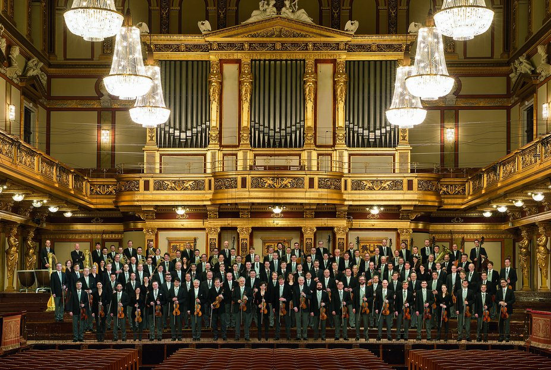

Concert of the Society of Friends of Music in Vienna
19:30 | Musikverein, Golden Hall, Vienna, Austria
Robert Schumann’s relationship with the Society of the Friends of Music in Vienna dates back to October 1836 when he sent the first three volumes of his “Neue Zeitschrift für Musik” [“New Journal of Music”] to the Society as a gift for their library. When Schumann went to Vienna in 1838, a close contact developed, partly on a personal basis with officials of the Society, and partly through his visits to their Archives which at that time already represented a music collection of a respectable dimension. There, he also obtained a copy of the autograph score of Franz Schubert’s Great Symphony in C major the perusal of which had been recommended by Ferdinand Schubert as well. That Schumann would have discovered this symphony in Vienna is a simple myth in the history of music, it was rather that his attention was drawn to it and that he was presented with a copy of the score. In this context, it is usually overlooked that the symphony had already been performed by the Conservatory Orchestra of the Society of the Friends of Music still in Schubert’s lifetime, and that, according to the testimony of Joseph Hüttenbrenner, it had been performed in full long before the so-called Leipzig premiere in Vienna, and this probably on 12th March 1829 when the programme leaflet of a Concert spiritual named the performance of a symphony in C major by Franz Schubert, with no more clues being available as to its identification.
CONDUCTOR
Alain AltinogluORCHESTRA
Vienna PhilharmonicCELLO
Gautier CapuçonPROGRAM
Antonín DvořákKonzert für Violoncello in h-Moll, op. 104
César Franck
Symphonie in d-Moll